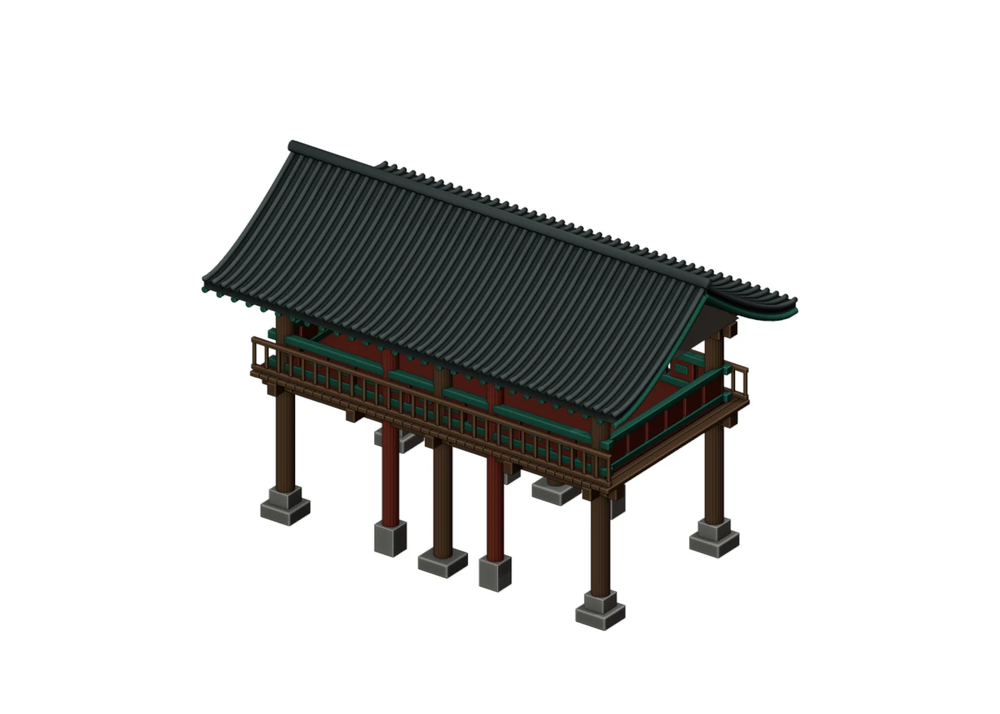
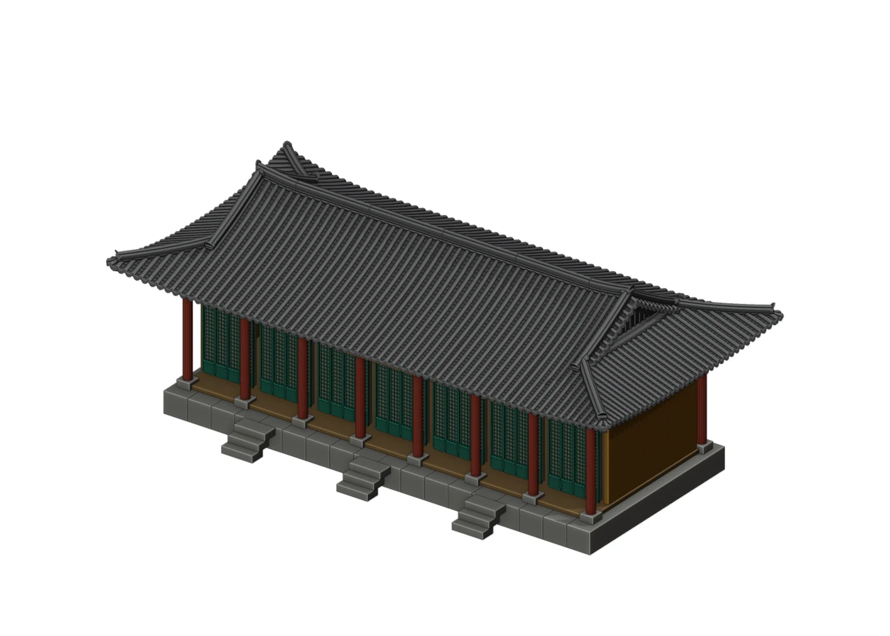
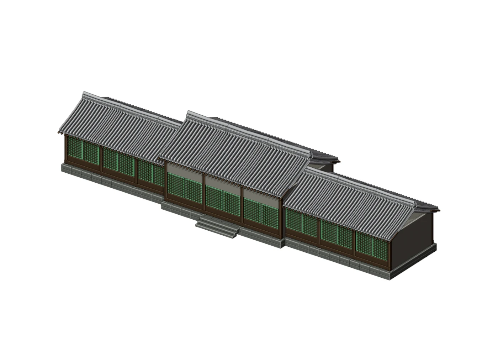

제금루
장사꾼을 만나는 관아 입구
REFERENCE · 참고 사진

사진 출처
MODEL · 제작 모델

- 관찰
- 아래층 통로 · 반복되는 기둥 · 녹색·붉은색 난간
- 재구성
- 아래층 통로와 위층 누각, 지붕·난간의 비례

Story · 02
인물·소품: ChatGPT·Higgsfield. 건축물: 참고 사진을 바탕으로 Blender에서 제작.


사진에서 확인한 구조와 비례를 반영한 모델.
치수·색채·단청은 제작용 설정. 객사의 원래 색은 흑백 사진만으로 확인하기 어려움.
장사꾼을 만나는 관아 입구
REFERENCE · 참고 사진
MODEL · 제작 모델

농민을 만나는 관아 마당
REFERENCE · 참고 사진

MODEL · 제작 모델


찬모의 이야기와 두 석사자의 마지막 장면
REFERENCE · 참고 사진

MODEL · 제작 모델



기와집·초가의 지붕·벽·창호·기단